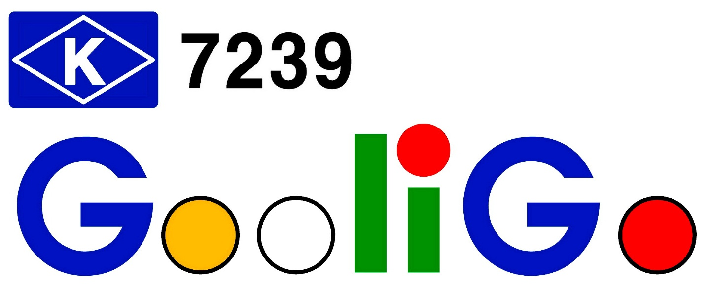

지난 시간을 돌아보고, 앞날을 바라보며
📅 일시: 2026년 3월 7일 (토요일) 12:00 ~ 18:00
📍 장소: 삼성동 JS당구클럽 (선릉역 10 출구 600m)
| 시간 | 내용 |
|---|---|
| 12:00 | 간단한 점심 |
| 12:30 | 개회선언 (굴리고 회장) 진행 설명 (운영위원장) 신입회원 소개 |
| 13:00 ~ 17:30 | 경기 진행 |
| 17:30 |
시상식 (사회: 굴리고 회장)
|
| 18:00 ~ | 저녁 식사 |
| 19:30 ~ | 2차 생맥주 |